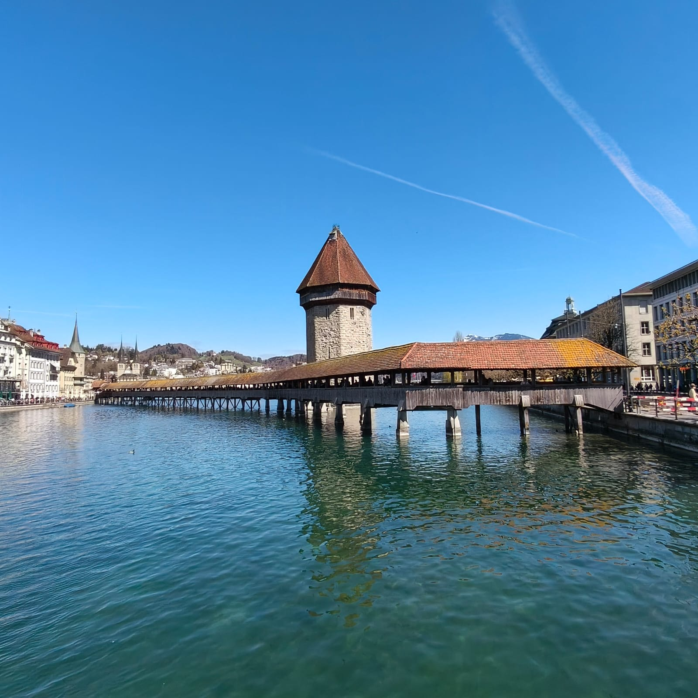
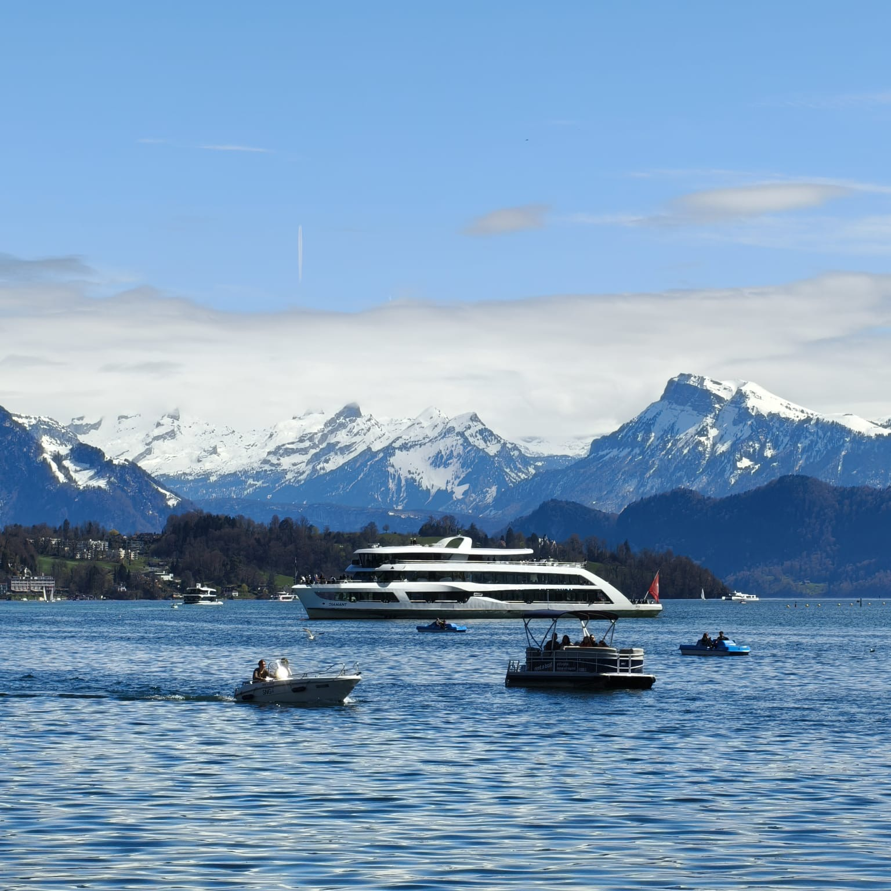

Francesca Canta


I support Tour Operators and DMCs by managing groups on the ground.
Licensed • Multilingual • Europe-wide
Contact MeEvery journey has its own rhythm — my role is to make sure everything flows seamlessly from start to finish.
I am a licensed Italian Tour Leader.
From arrivals to departures, I coordinate logistics, timing and communication.
My background in hospitality and international customer care allows me to adapt quickly.
I have coordinated cultural tours and multi-destination itineraries.
Clear communication and attention to detail are at the core of my work.
For me, a successful tour means that everything works — even the details travelers never notice.
Available for incoming, outgoing and transfer services across Italy and Europe.
Amsterdam – Bruges – Brussels – Paris – Lucerne – St. Moritz – Milan – Venice – Florence – Rome
Multi-country tour • 10+ days • International group
Rome – Assisi – San Giovanni Rotondo – Lanciano – Loreto
Religious group • Multi-city itinerary • Logistics coordination
Venice – Verona – Milan – Lake Como
Cultural group • City coordination • On-site management
Real tours. Real groups. Real coordination.
International groups across Europe




Amsterdam – Bruges – Brussels – Paris – Lucerne – St. Moritz – Milan – Venice – Florence – Rome
Rome – Assisi – San Giovanni Rotondo – Lanciano – Loreto
Venice – Verona – Milan – Lake Como